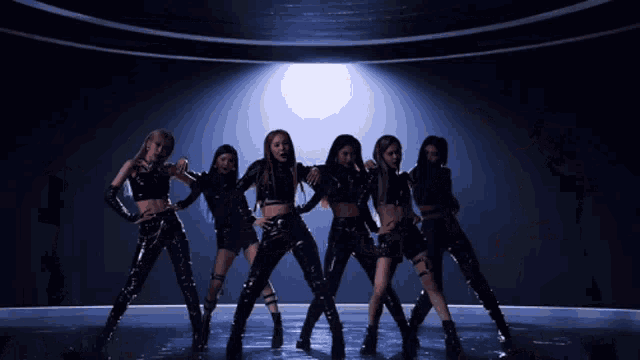

El kpop esK-POP es un subgénero del pop que refiere a que tiene origen en Corea del Sur. Es la abreviación de la Korean Popular Music. Este género es la fusión del pop y la electrónica con géneros más modernos y el resultado es muy movido y lleno de energía. Actualmente, este estilo de música se ha coronado como el más escuchado en YouTube, superando el récord del video musical con la mayor cantidad de vistas y visitas en un sólo día. El K-pop se volvió un fenómeno realmente global gracias a su distintiva mezcla de melodías pegajosas, coreografías increíbles y un sinfín de artistas muy atractivos que se prepararon por años para cantar y bailar a la perfección. Los principales grupos de K-Pop en Corea llevaron este género al mundo extranjero obteniendo un éxito inesperado. Uno de los pioneros fue el famoso BTS, ganando numerosos premios internacionales.
El K-pop tiene oferta para todos los gustos. Con raíces en la música pop, el K-pop se fusiona con muchos otros estilos como soul, rap, rock, R&B e incluso el funk. Los grupos más conocidos son: BTS, BlackPink, Girls Generation e ITZY. La estrategia de negocio del 'K-pop' no se limita solamente a la música, estos artistas generan gran cantidad de contenido en las redes sociales y medios de comunicación, en la que demuestran lo que representan dentro de su cultura, así como lo que viven en su entorno casi en el día a día. Una de las características principales de los fanáticos del 'K-pop' es su fidelidad y la devoción con la que siguen y apoyan a sus grupos favoritos. Según un análisis realizado por 'Kworb.net' dos de los primeros tres. Es increíble pero durante este 2020 el K-POP destronó al reggaetón. Este gráfico a continuación, representa un esquema más actual de cómo está la popularidad en los premios más internacionales y visualizaciones de youtube.

A partir de la década de 1990, el K-pop comenzó a escucharse fuera de su país de origen, atrayendo a sus fans con canciones pegajosas, presentaciones de danza energética y una estética muy cuidada de los miembros de las bandas. Sus miembros, a veces considerados “idols” (es decir, personas admirables en todas sus cualidades), son parte elemental de la cultura del K-pop. Actualmente, el K-pop es muy escuchado en todo el mundo. El interés por las estrellas del K-pop se extendió naturalmente a los artículos de moda o belleza que ellos usan. Una parte muy importante del K-pop es la comunicación de los artistas con sus fans; ellos suben mucha información sobre cómo es su día a día, y de esta forma sus fans pueden saber fácilmente qué marcas de ropa usan y cómo es su rutina de cuidado de la piel. 
El término que se emplea comúnmente para referirse a la difusión de los productos culturales coreanos, música y series de televisión, es Hallyu u Ola Coreana. Aunque al principio Hallyu se refería solo a los K-dramas y la música poco a poco se amplió su uso a toda la cultura coreana en general: gastronomía, tecnología, moda, arte, literatura etc. La crisis económica asiática de 1997 tuvo un rol fundamental en el desarrollo de todo este fenómeno denominado Hallyu. A la derecha se muestra un hilo que recorre la trayectoria del desarrollo del Hallyu. Durante los primeros años de 1990 las compañías Samsung y Hyundai se estaban expandiendo rápidamente en el mercado global, y en esos momentos la película Jurassic Park de Steven Spielberg se convirtió en un fenómeno mundial que recaudó millones de dólares. Esto llevó al gobierno coreano a darse cuenta de que la cultura podía ser lucrativa e incluso más rentable que los automóviles y semiconductores y, decidieron imitar el modelo de producción de Hollywood.


La reputación de la cultura popular coreana pasó a una nueva fase cuando un número creciente de idols coreanos entraron en el mercado musical japonés. A finales de 1990 y principios de los 2000, algunos grupos y solistas bajo SM Entertainment empezaron a ganar fama en Japón. El grupo femenino S.E.S conectó con el gusto japonés por su estilo idol y fluidez con el idioma, pero ninguna de las dos grandes compañías japonesas, AVEX y SONY, lo apoyaron y no alcanzó el estrellato. No obstante en 2002 BoA, apodada actualmente “La Reina del K-pop”, debutó en AVEX producida y promocionada como una cantante de J-pop. Su debut coincidió con tres acontecimientos esenciales en la mejoría de las relaciones entre Japón y Corea: En 1945, tras el periodo colonial de Japón, el gobierno coreano creó unas leyes que impedían cualquier intercambio cultural con Japón, esta censura terminó en 1998 con la Política Coreana de Puertas Abiertas, el proceso culminó definitivamente en 2004 cuando se legalizó la importación de CDs japoneses. El siguiente evento clave fue el FIFA World Cup de 2002 del que ambos países fueron anfitriones, y por último el éxito arrollador entre las mujeres japonesas del K-drama Winter Sonata emitido en 2003. Desde la década del 2000 se ha convertido en un fenómeno global de gran éxito entre los consumidores jóvenes, en parte por su forma de difusión a través de las nuevas tecnologías. Pero fue a partir del año 2012, con la canción “Gangnam Style” del rapero y cantante PSY, cuando se convirtió en un género musical reconocido en todo el mundo, tanto en el ámbito periodístico como en el académico.
En los últimos años la prensa académica ha tratado el tema desde distintas perspectivas evidenciando su importancia no solo como un fenómeno musical sino también sociológico, cultural y político. Sin embargo, la mayor parte de estos estudios se limitan a diferentes países de Asia y América, apenas se han dedicado páginas al tema en Europa y aún menos en España, donde solo contamos con escasas menciones desde el 2011. Sin embargo, el fenómeno K-pop es de especial interés para los estudios musicológicos, ya que ejemplifica claramente el funcionamiento de la industria musical globalizada, las nuevas formas de intercambio cultural a través de plataformas online, las actividades que llevan a cabo los fans (quienes pasan de ser solo consumidores a tomar el papel de productores de contenido) y los fenómenos transculturales provenientes de países en los márgenes culturales del mundo globalizado. El éxito del pop coreano pone de manifiesto cómo un pequeño país, antes apenas influyente, ha conseguido situarse entre las potencias mundiales al convertir su cultura en un producto para la exportación.